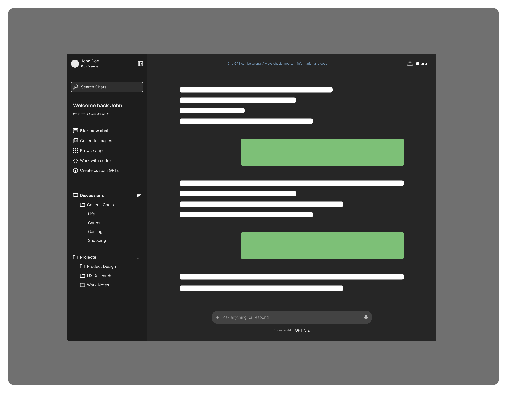

Product Design
ChatGPT — Conversation and Navigation Redesign
Redesigned ChatGPT’s interface to separate conversation from navigation, improving focus, clarity, and interaction flow.

Overview
ChatGPT’s interface mixed conversation, navigation, and system controls within the same space, creating unnecessary cognitive friction during a conversation-first experience.
Problem
Users had to split attention between interacting with the conversation and managing interface structure, making chat navigation and conversation switching feel less focused and less intuitive.
- Competing interface elements reduced focus
- Conversation flow was interrupted by navigation tasks
- System-driven structure increased cognitive load
Solution
I redesigned the layout to create clear functional separation between conversation and navigation.
- Left panel: Conversation navigation and management
- Center panel: Active conversation workspace
- Clear boundaries: Reduced overlap between interaction and system controls
This structure aligns the interface more closely with user mental models and supports uninterrupted conversation flow.
Impact
- Improved focus by isolating the primary task
- Reduced friction when navigating and switching chats
- Created a clearer and more scalable interface structure
Skills Demonstrated
- Interaction design
- Information architecture
- Cognitive load reduction
- Layout and spatial organization
- User-centered system thinking